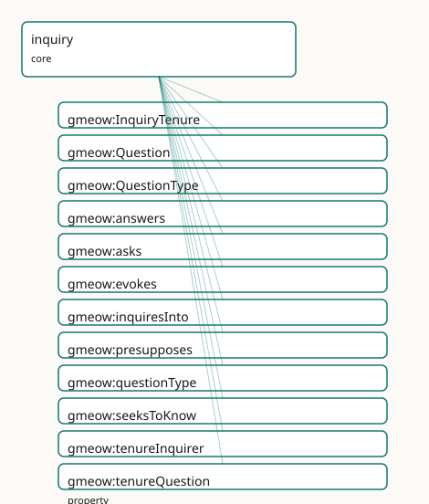

GMEOW Inquiry Module
- IRI: https://blackcatinformatics.ca/gmeow/slices/inquiry
- Tier: core
Group: core
What This Slice Covers
This slice owns 18 terms and contributes 2 mapping or projection rows. Use it when its terms match the native fact you want to preserve; use the linkage tables to see how those facts leave GMEOW for consumer vocabularies.
Dependencies
gmeow:slices/epistemicsgmeow:slices/kernelgmeow:slices/observationsgmeow:slices/standpointgmeow:slices/temporal
Consumers
Agentmemory of open problems / what it is trying to find out (Principle 14); recall surfaces open inquiries; abduction answerstypeWhyquestions; the metacognition slice's known-unknowns mint Questions; loaded-question detection bridges the deception slice.
Local Map

Examples
Loaded Question
- Source:
slices/core/inquiry/examples/loaded-question.ttl - GMEOW terms:
gmeow:Proposition,gmeow:Question,gmeow:Standpoint,gmeow:StandpointClaim,gmeow:claimModality,gmeow:methodExpertJudgement,gmeow:observationMethod,gmeow:observedFeature,gmeow:presupposes,gmeow:questionType
# SPDX-FileCopyrightText: 2026 Blackcat Informatics® Inc. <paudley@blackcatinformatics.ca>
# SPDX-License-Identifier: CC-BY-4.0
#
# Worked example — a LOADED question via the deception bridge, with NO new
# axiom. The classic "have you stopped cheating?" is a polar gmeow:Question that
# gmeow:presupposes a proposition ("you were cheating"). Loadedness is NOT a flag
# on the question: it is a gmeow:StandpointClaim over the presupposed proposition
# carrying gmeow:claimModality gmeow:refuted — a standpoint DENIES the
# presupposition, exposing the question as loaded. This reuses the standpoint /
# deception machinery (P6); there is no isLoaded bit and no truth bit anywhere.
@prefix gmeow: <https://blackcatinformatics.ca/gmeow/> .
@prefix ex: <https://blackcatinformatics.ca/gmeow/examples/inquiry/> .
@prefix rdfs: <http://www.w3.org/2000/01/rdf-schema#> .
# --- The polar question and the proposition it takes for granted.
ex:stoppedCheating a gmeow:Question ;
gmeow:questionType gmeow:typePolar ;
gmeow:presupposes ex:wasCheating ;
rdfs:label "have you stopped cheating?"@en .
ex:wasCheating a gmeow:Proposition ;
rdfs:label "you were cheating"@en .
# --- The frame from which the presupposition is denied.
ex:accused a gmeow:Standpoint ;
gmeow:sharpens gmeow:universalStandpoint .
# --- The deception bridge: a StandpointClaim over the presupposed proposition
# carrying gmeow:refuted. From this vantage the presupposition is DENIED, so
# the question is exposed as loaded. The question STAYS OPEN — loadedness is
# the refuted presupposition, not a property of the gmeow:Question itself.
ex:denial a gmeow:StandpointClaim ;
gmeow:vantage ex:accused ;
gmeow:observedFeature ex:wasCheating ;
gmeow:observationMethod gmeow:methodExpertJudgement ;
gmeow:claimModality gmeow:refuted .
Open Question And Resolution
- Source:
slices/core/inquiry/examples/open-question-and-resolution.ttl - GMEOW terms:
gmeow:Agent,gmeow:Entity,gmeow:Question,gmeow:Standpoint,gmeow:StandpointClaim,gmeow:answers,gmeow:asks,gmeow:believes,gmeow:claimModality,gmeow:knowsThat
# SPDX-FileCopyrightText: 2026 Blackcat Informatics® Inc. <paudley@blackcatinformatics.ca>
# SPDX-License-Identifier: CC-BY-4.0
#
# Worked example — the open→resolved inquiry lifecycle, reusing the epistemics
# spine. An agent asks a Wh-question, holding it OPEN. One vantage answers it
# with a gmeow:StandpointClaim (a kind of Observation): the answer rides
# gmeow:observedFeature / gmeow:observationResult and gmeow:answers the question.
# The agent RESOLVES the question by accepting that answer-claim through the
# epistemics spine — gmeow:knowsThat (which ENTAILS gmeow:believes by the
# keystone). No truth bit anywhere, and no global "answered" flag: resolution
# REUSES the epistemics spine rather than minting a new resolved term (P6).
@prefix gmeow: <https://blackcatinformatics.ca/gmeow/> .
@prefix ex: <https://blackcatinformatics.ca/gmeow/examples/inquiry/> .
@prefix rdfs: <http://www.w3.org/2000/01/rdf-schema#> .
# --- The agent and the open Wh-question.
ex:lillith a gmeow:Agent ;
gmeow:asks ex:whereIsKey . # the question is held OPEN by lillith
ex:whereIsKey a gmeow:Question ;
gmeow:questionType gmeow:typeWh ;
rdfs:label "where is the key?"@en .
# --- The observer whose vantage supplies an answer.
ex:houseObserver a gmeow:Standpoint ;
gmeow:sharpens gmeow:universalStandpoint .
ex:hookLocation a gmeow:Entity ;
rdfs:label "the hook by the door"@en .
# --- One vantage's answer: a StandpointClaim that gmeow:answers the question.
# The answer content rides the Observation spine (observedFeature = the
# thing observed, observationResult = the located place); the claim is one
# vantage-indexed answer among possibly many (P9), never THE answer.
ex:keyOnHook a gmeow:StandpointClaim ;
gmeow:answers ex:whereIsKey ;
gmeow:vantage ex:houseObserver ;
gmeow:observedFeature ex:whereIsKey ;
gmeow:observationResult ex:hookLocation ;
gmeow:observationMethod gmeow:methodDirectObservation ;
gmeow:claimModality gmeow:unequivocal .
# --- Resolution: lillith ACCEPTS the answer-claim through the epistemics spine.
# gmeow:knowsThat ⊑ gmeow:believes (the epistemics keystone): accepting the
# answer-claim closes the inquiry. The question is now RESOLVED FOR lillith
# — there is no global "answered" flag; another agent may still hold it open.
ex:lillith gmeow:knowsThat ex:keyOnHook . # entails gmeow:believes ex:keyOnHook
Terms
Classes
| Term | Label | Definition |
|---|---|---|
gmeow:InquiryTenure |
Inquiry Tenure | The reified, time-scoped fact that an agent held an open question over an interval — an inquiry opened in January and closed by an accepted answer in June is a... |
gmeow:Question |
Question | Erotetic content individuated by its ANSWERHOOD CONDITION — the set of propositions counting as direct answers — not by a truth-condition. Existing by social c... |
gmeow:QuestionType |
Question Type | The erotetic kind of a question — a closed value vocabulary spanning polar (yes/no), alternative (which-of-a-named-set), wh (who/what/where/when), why (explana... |
Properties
| Term | Label | Definition |
|---|---|---|
gmeow:answers |
answers | Relates a candidate direct answer to the question it answers. The DOMAIN is left intentionally open: an answer is typically a gmeow:StandpointClaim or a gmeow:... |
gmeow:asks |
asks | An agent poses / holds a question as open — the base inquiry attitude and the cheap 80% surface. Range is intentionally OPEN: the object may be a gmeow:Questio... |
gmeow:evokes |
evokes | Relates a declarative or erotetic premise to a question it gives rise to — Wiśniewski's erotetic implication (a question or set of propositions evokes a furthe... |
gmeow:inquiresInto |
inquires into | An agent actively pursues an answer to a question — the investigative attitude, committing inquiry effort, stronger than merely asking or wondering. Range OPEN... |
gmeow:presupposes |
presupposes | Relates a question to a proposition that must hold for the question to have a true answer — its presupposition ('have you stopped X?' presupposes 'you once did... |
gmeow:questionType |
question type | Classifies a question by its erotetic kind — one of the closed gmeow:QuestionType value vocabulary. NOT functional: a single question may carry several types a... |
gmeow:seeksToKnow |
seeks to know | An agent directs its inquiry at an epistemics resolution — pursuing the question specifically so as to gmeow:knowsThat its answer: the goal-directed erotetic a... |
gmeow:tenureInquirer |
tenure inquirer | The agent whose open question an inquiry-tenure records. Functional: one tenure, one inquirer; two agents holding the same question open are two tenures sharin... |
gmeow:tenureQuestion |
tenure question | The question the tenure records the agent as holding open over its interval. Functional: one tenure, one question; an agent holding five questions open bears f... |
gmeow:wondersWhether |
wonders whether | An agent entertains a question — typically a polar one — without committing inquiry effort to resolving it: the idle, low-investment erotetic attitude, weaker... |
Individuals
| Term | Label | Definition |
|---|---|---|
gmeow:typeAlternative |
alternative (which-of-a-set) | A which-of-a-named-set question — its answerhood condition is a closed disjunction of named alternatives ('tea or coffee?'). Distinct from a polar question (wh... |
gmeow:typeHow |
how (procedure-seeking) | A procedure-seeking question — its answerhood condition is a set of procedures / methods that achieve an end. Bridges the procedures extension: a typeHow quest... |
gmeow:typePolar |
polar (yes/no) | A yes/no question — its answerhood condition is a proposition and its negation; the direct answers are 'yes' and 'no'. The simplest erotetic kind, the natural... |
gmeow:typeWh |
wh (who/what/where/when) | A who/what/where/when question — its answerhood condition is an open set of instantiations of a variable (the individual filling the wh-slot). The constituent-... |
gmeow:typeWhy |
why (explanation-seeking) | An explanation-seeking question — its answerhood condition is a set of explanations of a fact (the explanandum). Bridges the abduction tetrad: a typeWhy questi... |
Linkages
- Rows: 2
- Projection profiles: -
- External vocabularies:
schema
| Source | Kind | Profile | Predicate/Relation | Target | Evidence |
|---|---|---|---|---|---|
gmeow:Question |
equivalence | - |
skos:closeMatch | schema:Question | gmeow-inquiry.sssom.tsv; gmeow:eqInq001; confidence 0.9 |
gmeow:answers |
equivalence | - |
skos:closeMatch | schema:answer | gmeow-inquiry.sssom.tsv; gmeow:eqInq002; confidence 0.8 |
Guide
Inquiry
Slice:
https://blackcatinformatics.ca/gmeow/slices/inquiry· tier: core
Erotetic content — what an agent asks, as opposed to what it asserts or pursues. The epistemic
stack already lets an agent assert (gmeow:Proposition, truth-condition) and aim
(gmeow:Goal, satisfaction-condition); inquiry supplies the missing third content sibling,
gmeow:Question, individuated by its answerhood condition — the set of propositions counting as
direct answers. A question is neither true/false nor satisfied: it is resolved by an accepted
answer. This minimal core seeds the gmeow:Question class, the closed gmeow:QuestionType value
vocabulary, the presupposition / answer relations, the flat four-verb inquiry-attitude spine, the
solver-layer gmeow:evokes decoration, and the reified gmeow:InquiryTenure half.
The missing third sibling
The epistemic stack can assert and aim but not ask. gmeow:Question completes the trio of
content modes — three gmeow:SocialObject siblings differing only in mode of content:
| Content | Individuated by | Settled by | Genus |
|---|---|---|---|
gmeow:Proposition (assertoric) |
truth-condition | being held true | gmeow:SocialObject |
gmeow:Goal (optative) |
satisfaction-condition | being satisfied | gmeow:SocialObject |
gmeow:Question (erotetic) |
answerhood-condition | being resolved by an accepted answer | gmeow:SocialObject |
The three are documented siblings, not subsumed: there is deliberately no rdfs:subClassOf
between them, in either direction. Subsumption would erase the content-mode distinction that is the
whole point — a question shares no truth-condition with a proposition and no satisfaction-condition
with a goal, only the gmeow:SocialObject genus (content existing by social convention). This
extends the Proposition/Goal direction-of-fit precedent (a belief and a goal may share the same
proposition yet differ in fit, with no Goal ⊑ Proposition bridge) rather than amending it. The
siblinghood lives in prose and the tests/test_inquiry.py no-subsumption guard, never in an axiom.
gmeow:Question
Erotetic content individuated by its answerhood condition — the set of propositions counting as
direct answers — not by a truth-condition. A gmeow:SocialObject (gufo:Kind) existing by social
convention like every description, it is neither true nor false (unlike a gmeow:Proposition) nor
satisfied (unlike a gmeow:Goal): it is resolved by an accepted answer. Mint it once, classify
it with gmeow:questionType, link its presuppositions with gmeow:presupposes and its candidate
answers with gmeow:answers, and let several agents hold the one question open and answer it
differently from different vantages (Principle 9).
Question types
gmeow:QuestionType is a closed value vocabulary (gufo:AbstractIndividualType ⊑ gufo:QualityValue),
mirroring the gmeow:StandpointModality pattern: its members are individuals, never subclasses,
and more than one may co-apply to a single question (the property is non-functional).
| Value | Kind | Answerhood condition |
|---|---|---|
gmeow:typePolar |
polar (yes/no) | a proposition and its negation — answers are "yes"/"no" |
gmeow:typeAlternative |
alternative (which-of-a-set) | a closed disjunction of named alternatives ("tea or coffee?") |
gmeow:typeWh |
wh (who/what/where/when) | an open set of instantiations of a variable (the wh-slot filler) |
gmeow:typeWhy |
why (explanation-seeking) | a set of explanations of a fact — the explanandum |
gmeow:typeHow |
how (procedure-seeking) | a set of procedures / methods achieving an end |
Two type values carry documented routing bridges (no axiom): a gmeow:typeWhy question's
explanandum is exactly the abductive explanandum, so abduction (the inference tetrad) answers
gmeow:typeWhy questions; a gmeow:typeHow question is answered by a procedure described in the
procedures extension. The bridges are routing for consumers, not entailments.
gmeow:QuestionType · gmeow:questionType
gmeow:QuestionType is the closed value vocabulary of erotetic kinds; gmeow:questionType
(domain gmeow:Question, range gmeow:QuestionType) classifies a question by pointing it at one or
more of those values. It is non-functional on purpose — a "why … and how" question is both
gmeow:typeWhy and gmeow:typeHow — so consumers route the explanandum to abduction and the
procedure to the procedures extension off the co-applied values.
The inquiry attitude spine
Four agent-to-question attitudes form the flat 80% surface (Principle 4). Each is an
owl:ObjectProperty with domain gmeow:Agent, an open range (the epistemics doxastic-spine
precedent, Principle 13), and is non-functional — an agent holds many inquiries at once.
| Property | Attitude |
|---|---|
gmeow:asks |
poses / holds a question as open — the base attitude, the cheap 80% surface |
gmeow:wondersWhether |
idly entertains a question (typically polar) without committing inquiry effort |
gmeow:inquiresInto |
actively investigates, committing inquiry effort — stronger than asking or wondering |
gmeow:seeksToKnow |
directs inquiry at an epistemics resolution — pursues so as to gmeow:knowsThat the answer |
The spine is deliberately FLAT: there is no rdfs:subPropertyOf among the four — they are
four distinct attitudes, not a hierarchy. This contrasts the doxastic spine's keystone
gmeow:knowsThat ⊑ gmeow:believes; inquiry has no analogous keystone subproperty because no inquiry
attitude entails another (wondering is not a weaker asking — it is a different stance). The open
range lets the 80% case point cheaply at any gmeow:Question or reified inquiry; whose vantage and
over what interval ride gmeow:accordingTo / gmeow:validFrom / gmeow:validUntil on the statement.
gmeow:asks · gmeow:wondersWhether · gmeow:inquiresInto · gmeow:seeksToKnow
The flat inquiry attitudes, weakest to most directed: gmeow:asks holds a question open;
gmeow:wondersWhether idly entertains it; gmeow:inquiresInto actively investigates it; and
gmeow:seeksToKnow aims the inquiry at an epistemics resolution. All four share domain gmeow:Agent,
an open range, non-functionality, and no subproperty hierarchy.
Open vs resolved. A question is open for an agent until that agent gmeow:accepts or
gmeow:knowsThat an gmeow:answers-claim for it. Resolution reuses the epistemics doxastic spine
— there is no new resolved, isAnswered, or answerValue term (Principle 6). The
open-question-and-resolution.ttl example walks the full
lifecycle: ex:lillith gmeow:asks ex:whereIsKey (a gmeow:typeWh question held open); a house
observer's gmeow:StandpointClaim gmeow:answers it (one vantage-indexed answer among possibly
many, riding the Observation spine); and ex:lillith gmeow:knowsThat that answer-claim resolves the
question for lillith — gmeow:knowsThat ⊑ gmeow:believes materialises the belief by the keystone.
Resolution is per-agent, never a global "answered" flag; another agent may still hold the question
open. No truth bit appears anywhere.
Presupposition & loaded questions
gmeow:presupposes (domain gmeow:Question, range gmeow:Proposition, non-functional) records a
proposition that must hold for the question to admit a true answer — "have you stopped X?"
presupposes "you once did X". The presupposition rides as the subject of the relation, never
asserted as a fact of the universal standpoint.
A loaded question carries no new axiom and no isLoaded flag. Loadedness is a contested or
false presupposition, modelled by reusing the standpoint / deception machinery (Principle 6): a
gmeow:StandpointClaim over the presupposed gmeow:Proposition carrying
gmeow:claimModality gmeow:refuted — a standpoint denies the presupposition, exposing the
question as loaded. The loaded-question.ttl example shows the
classic "have you stopped cheating?" (a gmeow:typePolar question presupposing "you were cheating"):
the accused standpoint mints a refuted gmeow:StandpointClaim over that presupposition. The question
itself stays open — loadedness is the refuted presupposition, not a property of the
gmeow:Question — and the deception slice reads the denial off the standpoint layer.
gmeow:presupposes
Relates a question to a proposition it takes for granted. Non-functional (a question may presuppose
several propositions). To mark a loaded question, mint a refuted gmeow:StandpointClaim over the
presupposed gmeow:Proposition rather than altering the question — the deception-slice bridge, with
no isLoaded bit and no truth bit on the question.
Answers are vantage-indexed
gmeow:answers (range gmeow:Question, open domain, non-functional) relates a candidate direct
answer — typically a gmeow:StandpointClaim or a gmeow:Proposition — to the question it answers.
The domain stays open (documented in prose, never an owl:unionOf) so the answer surface is not
prematurely closed. Answers are vantage-indexed (Principle 9): different standpoints answer the
same question differently and the answers coexist — there is never one global answer. Whose
answer it is rides gmeow:accordingTo on the statement; an agent's acceptance rides the epistemics
spine (gmeow:accepts / gmeow:knowsThat), never a privileged-winner slot.
gmeow:answers · gmeow:evokes
gmeow:answers carries one standpoint's direct answer (open domain, vantage-indexed, non-functional);
gmeow:evokes (range gmeow:Question, open domain, non-functional) records Wiśniewski's erotetic
implication — a declarative or erotetic premise giving rise to a further question (a gmeow:Proposition
or a gmeow:Question may evoke a question, e.g. "who committed it?" evokes "what was the motive?").
gmeow:evokes is a solver-layer decoration (Principle 12): it carries no reasoner / entailment
semantics in core — the ontology never derives an evoked question and no DL axiom enforces the
relation; whether one question genuinely evokes another is solver work, asserted here only as recorded
structure.
gmeow:InquiryTenure · gmeow:tenureInquirer · gmeow:tenureQuestion
gmeow:InquiryTenure (gufo:SituationType ⊑ gmeow:TimeScopedRelation) is the reified, time-scoped
fact that an agent held an open question over an interval — the gmeow:StandpointTenure idiom applied
to inquiry, minted on demand when the opening / closing of an inquiry is itself the fact of
interest (the common case is a bare gmeow:asks with gmeow:validFrom / gmeow:validUntil,
Principle 4). It carries its interval via gmeow:duringInterval (temporal module) and mediates at
least one question through an EL owl:someValuesFrom restriction on gmeow:tenureQuestion
(closed-world "exactly one" is SHACL's gmeow:InquiryTenureShape). gmeow:tenureInquirer (functional,
range gmeow:Agent) names the one inquirer and gmeow:tenureQuestion (functional, range
gmeow:Question) the one question — two agents holding the same question open are two tenures
sharing one gmeow:tenureQuestion, five open questions are five tenures.
Reopening, retain-never-delete. An inquiry opened in January and closed by an accepted answer in
June is an opened-then-closed tenure, never a deletion (Principle 10). Reopening a closed inquiry
suppresses the prior accepted answer with gmeow:displayable false rather than removing any triple —
the question and its full inquiry history stay queryable.
SSSOM alignments (mappings/equivalences.ttl)
Authored once in mappings/equivalences.ttl and compiled to mappings/gmeow-inquiry.sssom.tsv by
gmeow compile-mappings (Principle 4); all by reference (Principle 5) — GMEOW never imports an
external axiom. The match to schema.org's QA vocabulary is deliberately loose (skos:closeMatch, not
equivalentClass).
| GMEOW | Predicate | Target | Note |
|---|---|---|---|
gmeow:Question |
skos:closeMatch |
schema:Question |
schema:Question is the QA speech act / posted question on a QAPage; gmeow:Question is answerhood-individuated content (the third content sibling), neither true/false nor a page |
gmeow:answers |
skos:closeMatch |
schema:answer |
schema:answer's schema:acceptedAnswer / schema:suggestedAnswer lineage picks one accepted answer; gmeow:answers is vantage-indexed and coexisting (P9), acceptance carried on the epistemics spine |
The speech-act-vs-answerhood-content distinction is why neither row is equivalentClass: the
schema:acceptedAnswer / schema:suggestedAnswer split has no gmeow counterpart and folds into the
standpoint layer. The competency-question (CQ) practice familiar from ontology engineering — a
question as a requirement a model must answer — is the natural consumer of this slice but has no
stable IRI vocabulary, so it is referenced in prose only. The gmeow:QuestionType value vocabulary
likewise has no stable external IRI counterpart and is intentionally left unmapped.
Dependencies
| Slice | Why |
|---|---|
kernel |
gmeow:SocialObject (the content-mode genus) and gmeow:Agent (the inquiry-spine domain) |
epistemics |
gmeow:Proposition (the presupposition range) and the doxastic spine (gmeow:accepts / gmeow:knowsThat) that resolves inquiries — reused, never re-minted |
standpoint |
gmeow:StandpointClaim and gmeow:claimModality gmeow:refuted carry vantage-indexed answers and loaded-question denials |
observations |
the Observation spine an answering gmeow:StandpointClaim rides (gmeow:vantage, gmeow:observedFeature, gmeow:observationResult) |
temporal |
gmeow:TimeScopedRelation (the gmeow:InquiryTenure parent) and gmeow:duringInterval (its scoping interval) |
Verified by construction
tests/test_inquiry.py pins the load-bearing shape of the slice:
- Sibling no-subsumption guard —
gmeow:Questionis agmeow:SocialObject(gufo:Kind) with nordfs:subClassOfto or fromgmeow:Proposition/gmeow:Goalin either direction. - Flat, open-range spine — each of
gmeow:asks/gmeow:wondersWhether/gmeow:inquiresInto/gmeow:seeksToKnowis an object property with domaingmeow:Agent, nordfs:range, noowl:FunctionalProperty, and nordfs:subPropertyOf. - No truth or resolution bit — none of
isResolved/isAnswered/answerValue/isTrue/isFalseappears in any triple position; resolution reuses the epistemics spine. gmeow:answers/gmeow:evokesopen domain — both range overgmeow:Questionwith no assertedrdfs:domain, so the answer / evocation surface is never prematurely closed.gmeow:InquiryTenureshape — agufo:SituationType ⊑ gmeow:TimeScopedRelationwith functionalgmeow:tenureInquirer/gmeow:tenureQuestionand the ELowl:someValuesFrommediation restriction ongmeow:tenureQuestion.Annotationcompleteness (Principle 8) — all 18 locally-declared terms carry anrdfs:label, askos:definition, andrdfs:isDefinedBythe inquiry slice IRI.